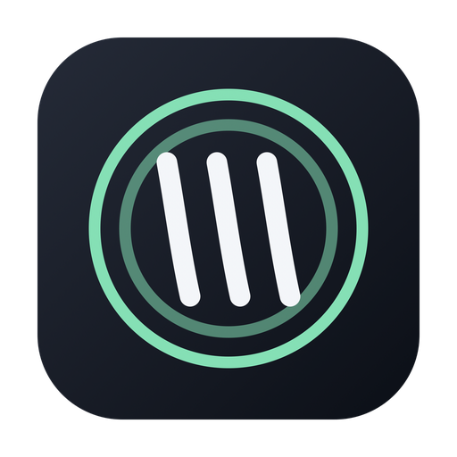

Install Xcode 27
Open it once with the iPhone connected, so it installs its developer tools on the phone.

Open iPhone UseOpen source · CLI · MCP
Plug your iPhone into your Mac, or reach it over Wi-Fi. Your agent sees the live screen and taps, types and swipes on it through Xcode's CoreDevice services. Nothing to install on the phone, no pointer to calibrate.
Needs Xcode 27, iOS 27 and Developer Mode. On Xcode 26 or iOS 26? Install v0.0.3, the last release that works without Xcode 27.
A real device, a real task
The agent searches Instagram for dinner recipes, opens a cooking reel, moves through the feed, and likes a video, all through MCP. This recording used the earlier Bluetooth version; the same tools now run over USB or Wi-Fi.
Explore the source ↗The connection
Your Mac reads the screen and sends input through the same services Xcode uses; your MCP client brings the agent.
Closed loop: every action returns a fresh screenshot, so the agent checks the result before moving on.
Start with what you own
Install and start the CLI, connect your iPhone by cable, and add it. After that it also works over Wi-Fi.
curl -fsSL https://raw.githubusercontent.com/semsturgut/open-iphone-use/main/install.sh | bashopen-iphone-use serveIt starts in the background and prints a Web UI: link (http://127.0.0.1:27893). Use open-iphone-use stop to stop the server.
open-iphone-use newOr select Add phone in the web UI, where its screen appears live.
curl -fsSL https://raw.githubusercontent.com/semsturgut/open-iphone-use/main/install.sh | bash -s -- --uninstallOn Xcode 26 or iOS 26, install v0.0.3.
Advanced installation ↗Open it once with the iPhone connected, so it installs its developer tools on the phone.
On the iPhone (iOS 27 or later): Settings → Privacy & Security → Developer Mode. Trust this Mac when asked.
Run open-iphone-use new or select Add phone in the web UI. The live screen appears at once; unplug later and it keeps working over Wi-Fi on the same network.
Setup registers the MCP server and skill for detected clients. Use an image-capable agent; the server does not need an AI API key.
Input
Touches go to the exact point on the screen, as from a finger, so there is no pointer to aim or calibrate. Text, key chords and the Home, Lock, volume and Siri buttons work too.
Each action returns a frame captured after the input ended, and a tap result reports the point it touched. An accepted action does not prove the UI changed: the agent checks the returned screen every time.
Read how it works ↗Built for agent tools
Apple's iPhone Mirroring brings an iPhone to the Mac desktop. Open iPhone Use makes the screen and input available to MCP agents: a live stream from the phone, exact touches and keys, and standard tools your agent can call. The phone stays usable in your hand; iPhone Mirroring needs it locked.
The project grows outward
Available USB and Wi-Fi control · live web UI · MCP
Available One USB phone plus more over Wi-Fi, side by side
Planned Several USB phones on one server
Planned Tap controls by name with the accessibility tree
Earlier Bluetooth + Safari for Xcode 26 / iOS 26: v0.0.3